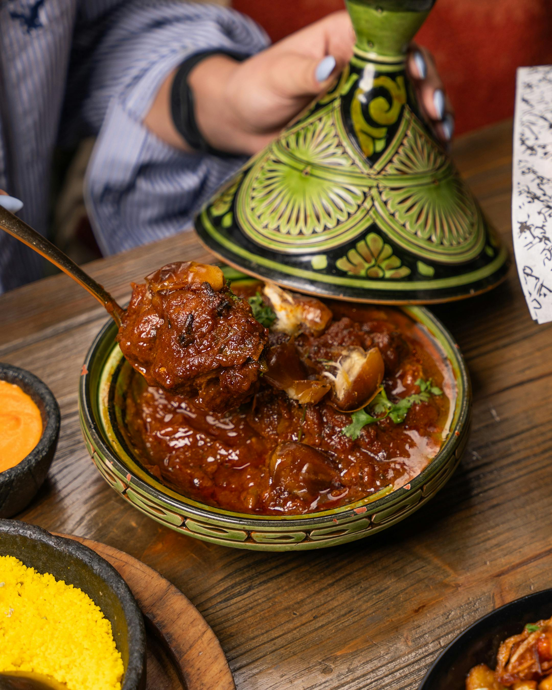

Persian Lamb Stew

Aromatic Persian Inspired Stew
Persian lamb stew dazzles with melt-in-your-mouth lamb simmered in an enchanting broth of saffron,
cumin, and rosewater. Pomegranate and apricots infuse the dish with a perfect balance of tart and sweet,
while aromatic spices evoke ancient Persian bazaars. Each bite is a sumptuous journey that warms the heart
and beckons you to indulge in its rich, exotic charm..
Savor tender lamb, slow-cooked to perfection in a rich, aromatic broth of saffron, cinnamon, and cardamom.
Persian lamb stew melds succulent meat with tangy pomegranate, sweet dried fruits, and a medley of spices.
Every bite transports you to ancient Persia, where culinary tradition meets indulgent flavor, creating a warm,
inviting dish that lingers on the palate.
- 2 lbs lamb shoulder, cubed
- 2 large onions, chopped
- 4 garlic cloves, minced
- 2 tsp turmeric
- ½ tsp cinnamon
- ½ tsp cumin
- ¼ tsp saffron threads (soaked in warm water)
- 2 dried limes (or 1 tbsp lime juice)
- 1 cup pomegranate molasses
- 2 tbsp tomato paste
- 2 cups lamb or vegetable broth
- Salt and pepper, to taste
- 2 tbsp olive oil
Steps
Prep The Ingredients
- Cube 2 lbs of lamb shoulder and season with salt and pepper.
- Chop 2 large onions and mince 4 garlic cloves.
- Soak ¼ tsp saffron threads in warm water.
-
Sear the Lamb:
- Heat 2 tbsp olive oil in a large pot over medium-high heat.
- Sear the lamb cubes until browned on all sides. Remove and set aside.
-
Sauté Onions & Spices:
- In the same pot, add the chopped onions and cook until soft and golden.
- Stir in the garlic, 2 tsp turmeric, ½ tsp cinnamon, and ½ tsp cumin.
- Add 2 tbsp tomato paste and cook for another minute.
-
Combine & Simmer:
- Return the lamb to the pot.
- Add 2 cups broth, the saffron water, 2 dried limes (or 1 tbsp lime juice), and 1 cup pomegranate molasses.
- Bring to a simmer, then reduce the heat to low. Cover and let it cook for 1.5–2 hours until the lamb is tender.
-
Finish & Serve:
- Taste and adjust seasoning with salt and pepper.
- Serve hot over rice or with your favorite flatbread.
Home